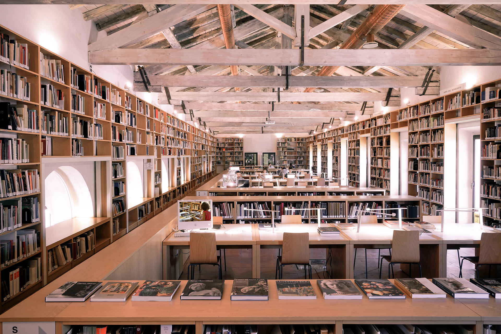
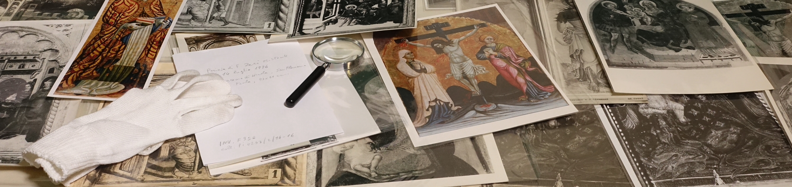
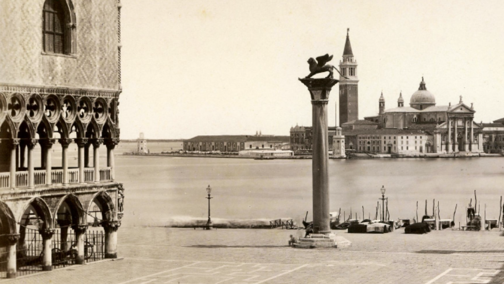
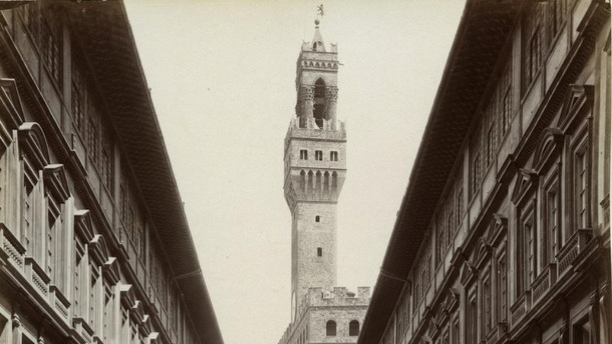
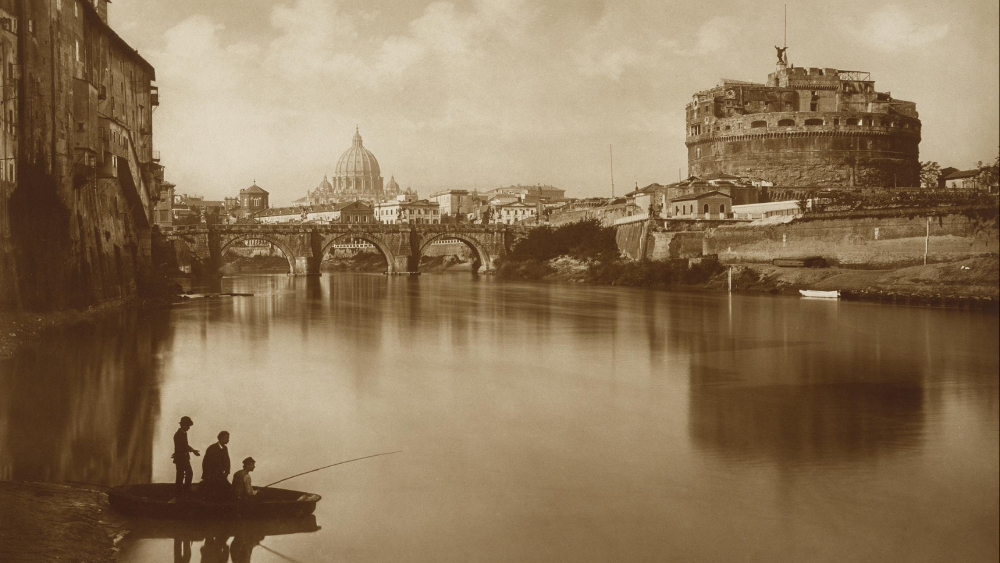
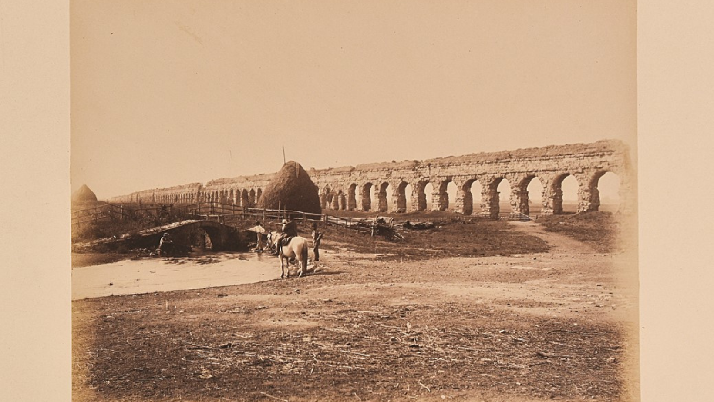
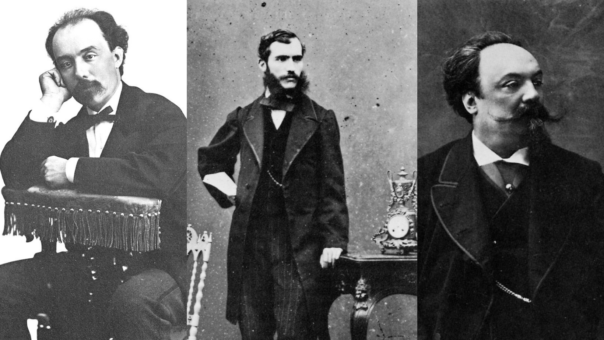
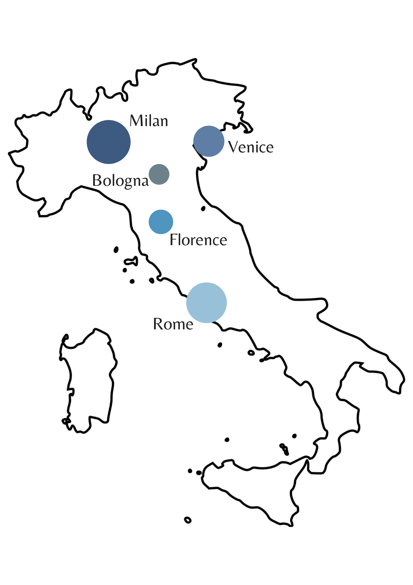

The human history of the world's largest private archive on Italian painting.
Introduction

Have you ever wondered what the history of a photographic archive is?
Most probably it is the story of the humans who contributed to its creation and whose works have been catalogued. It will be the story of the men who travelled, studied and met each other to create those works.
And, in the end, it will undoubtedly be the story of the human being who made it all possible: Federico Zeri. Fototeca Zeri is the product of his studies in art history and at the same time the result of a broader vision, an invaluable resource for art history and photography scholars.
Zeri Photo Archive through ARTchives' lens

For a first approach to the Fototeca Zeri, ARTchives
as a collection of archival descriptions of art historians’
collections is a resource we cannot ignore.
And it is within ARTchives that our journey of discovery
into the human history of the Fototeca Zeri begins. Let's look at the data about the Fototeca Zeri inside ARTchives.
Art Historians and Organizations
Artists, schools, periods
Genres and themes
And what about the photographers?
In search of the hidden photographers in Zeri Photo Archive
In order to understand what was missing in ARTchives, we decided to take a step further in our journey. Our first stop was Zeri & LODe. From this first research we were able to map a significant part of the photographers who contributed to the Photo Archive.
In this barchart we can see the ten first most relevant contributors in terms of quantity.
The first thing to notice is that the largest contributions come from anonymous sources. As if something must remain hidden in our investigation.
However, other entities and personalities have come to light.
What kind of contributions are we talking about?
More than Anonymous...
Our investigation meets a crossroads. We can glimpse two major groups of contributors to the Zeri Photo Archive.
On the one hand, photographers and photo studios; on the other, large institutions among the most renowned in the world.
Driven by the desire to put a real face on these photographers, we leave institutions aside and focus on humans.
Beyond the lens
Unraveling the photographic library of human history for us is to recognise the authorship of photographs and see the faces that
were hidden behind the lens of the camera. The people below
are some of the ones we were able to find back in Wikidata.
1 / 6

Photo by Carlo Naya
2 / 6

Photo by Giacomo Brogi
3 / 6

Photo by James Anderson
4 / 6

Photo by Romualdo Moscioni
5 / 6

Alinari brothers. From left to right: Giuseppe, Leopoldo and Romualdo.
Behind the faces of these photographers there is a world to explore.
The journey can continue, from the places where they were born to the cities where they lived,
worked and took their photographs. In particular,
our photographers come from Italy, Germany, France, Denmark, United Kindom, Switzerland,
Netherlands, Norway, Japan, Belgium, Austria, Czeck Republic, Hungary, Slovenia, Sweden, United States and New Zealand.
Cities: places of meetings and inspiration
Tracing their steps from their home states to the cities that hosted their work, the relationships between these photographers came to the surface.
Many have shared the same cities, the same places and their eyes have also seen the same landscapes.
The capitals of photography: the Italian panorama

Looking at the Italian context in particular, we can observe how during the 20th century some cities became highly centralised in terms of the activity of photographers and photographic studios.
In the first place was Milan, the centre of activity for many photographic studios, including Gian Battista Colombo, Gigi Bassani and Dino Zani. Rome was another important capital of photography, where Fiorentini, Moscioni and the Anderson studio were active; the latter also had some activity in Venice, along with Naya and Salviati.
Florence and Bologna, despite the smaller number of recognised photographers in these cities, were home to the activities of major studios such as those of the Alinari brothers.
A path of relationships
In the last stage of our journey, in order to finally see the human history of our archive, we just have to add one last piece: time.
By combining the time and space of our photographers, we have created a path of relationships which envision the movement behind the very creation of the photographs.
Conclusion
The ultimate goal of our journey was to find what had been left behind. Thus photography has long lived in the shadow of art history, relegated to the corners of knowledge and arts.
The photographic heritage is still a breeding ground for new studies.
We have tried to offer scholars of the history of photography more information about the mysterious lives of photographers.
To restore dignity to the figure who made possible the permanence of images that preserve the artistic heritage of Italy and the world.
For this reason, we decided to share the knowledge graph that could enrich other interesting projects such as ARTchives with information about the photographers whose photos populated the Fototeca Zeri.
Data
In the last stage of our journey, in order to finally see the human history of our archive, we just have to add one last piece: time.
By combining the time and space of our photographers, we have created a path of relationships which envision the movement behind the very creation of the photographs.
About Humans of Zeri Photo Archive
The Humans of Zeri Photo Archive project has been realised for the Electronic Publishing and Digital Storytelling exam held by Professor Marilena Daquino, within the Digital Humanities and Digital Knowledge course at the University of Bologna.
The general aim of the project is to investigate topics related to the field of art history, exploiting linked open data as much as possible and making use of the information available on the ARTchives project and other data-driven realities such as Wikidata.
Specifically, our study focused on expanding the data available on ARTchives about the Zeri Photo Library, integrating it with information about its photographers, in aim of improving research on the study of art photography. We modeled our project in order to be applicable to other collections within ARTchives, with the aim of improving the representation of the content of large collections through the data visualizations.
Amanda Culoma
Master's Degree student, DHDK @UniBo. Graduated in Humanities.